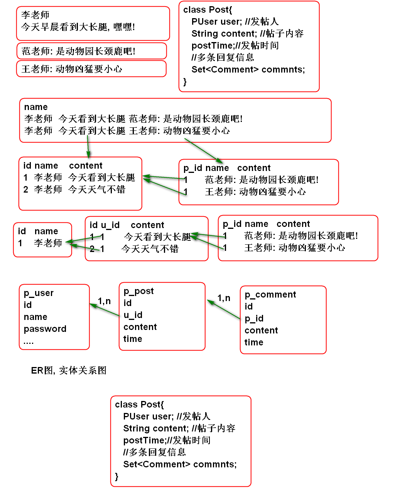
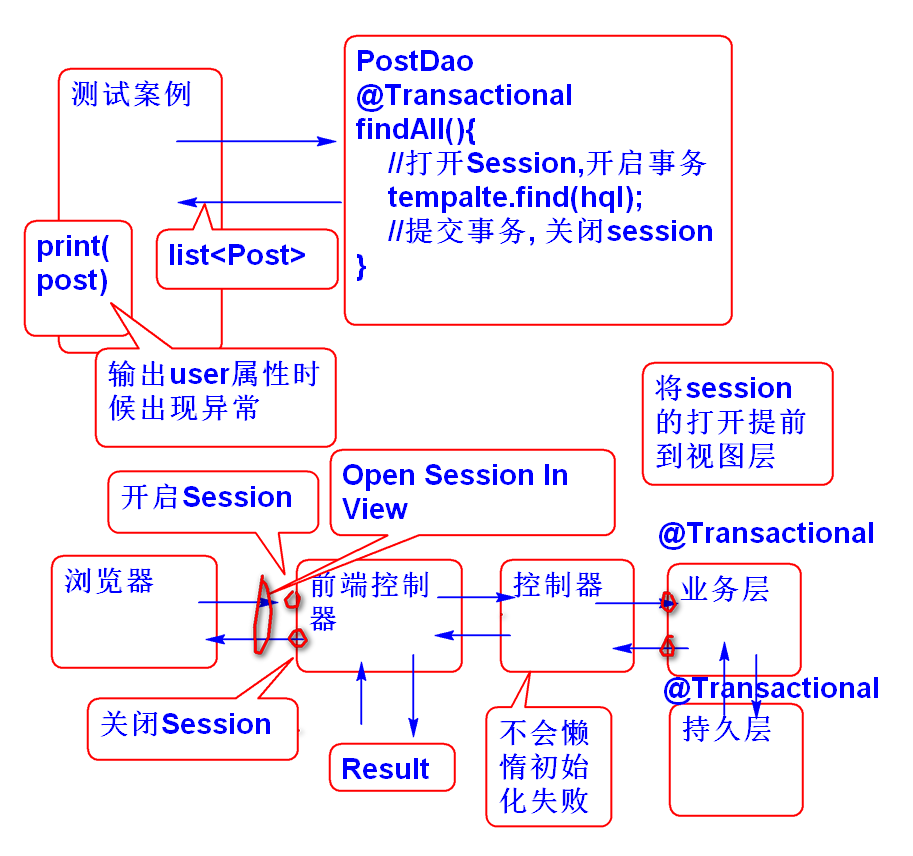
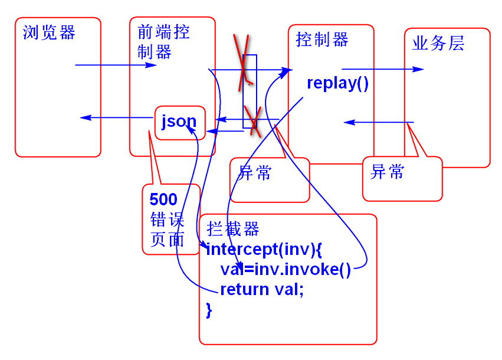

业务中经常有复杂关系存在, 比如: 描述一个发帖与回复的业务场景

建表SQL如下:
create table p_user(
u_id int not null auto_increment,
u_name varchar(100),
u_password varchar(100),
u_nick varchar(50),
u_reg_date timestamp,
primary key(u_id)
);
insert into p_user (u_id, u_name,
u_password, u_nick, u_reg_date)values
(null, '李洪鹤', '123', '李大湿', now());
create table p_post(
p_id int not null auto_increment,
user_id int,
p_time timestamp,
p_content varchar(800),
primary key(p_id)
);
insert into p_post (p_id, user_id, p_time,
p_content) values (null, 1, now(),
'今天早晨看到大长腿, 嘿嘿!');
insert into p_post (p_id, user_id, p_time,
p_content) values (null, 1, now(),
'今天天气不错, 晒吐露皮了!');
create table p_comment(
c_id int not null auto_increment,
post_id int,
c_name varchar(100),
c_time timestamp,
c_content varchar(800),
primary key(c_id)
);
insert into p_comment ( c_id, post_id,
c_name, c_time, c_content) values
(null, 1, '范传奇', now(),
'在哪个动物玩呢?');
insert into p_comment ( c_id, post_id,
c_name, c_time, c_content) values
(null, 1, '王克晶', now(),
'李老师动物凶猛呀!');
insert into p_comment ( c_id, post_id,
c_name, c_time, c_content) values
(null, 1, '范传奇', now(),
'请李老师附湿一首!');
映射步骤如下:
映射User
创建User类
public class User implements Serializable{
private static final long serialVersionUID = -1431419203395580430L;
private int id;
private String name;
private String password;
private String nick;
private Date regDate;
public User() {
}
public User(int id, String name, String password, String nick, Date regDate) {
super();
this.id = id;
this.name = name;
this.password = password;
this.nick = nick;
this.regDate = regDate;
}
public int getId() {
return id;
}
public void setId(int id) {
this.id = id;
}
public String getName() {
return name;
}
public void setName(String name) {
this.name = name;
}
public String getPassword() {
return password;
}
public void setPassword(String password) {
this.password = password;
}
public String getNick() {
return nick;
}
public void setNick(String nick) {
this.nick = nick;
}
public Date getRegDate() {
return regDate;
}
public void setRegDate(Date regDate) {
this.regDate = regDate;
}
@Override
public String toString() {
return "User [id=" + id + ", name=" + name + ", password=" + password + ", nick=" + nick + ", regDate="
+ regDate + "]";
}
@Override
public int hashCode() {
final int prime = 31;
int result = 1;
result = prime * result + id;
return result;
}
@Override
public boolean equals(Object obj) {
if (this == obj)
return true;
if (obj == null)
return false;
if (getClass() != obj.getClass())
return false;
User other = (User) obj;
if (id != other.id)
return false;
return true;
}
}
编写映射文件 User.hbm.xml
<?xml version="1.0" encoding="UTF-8"?>
<!DOCTYPE hibernate-mapping PUBLIC
"-//Hibernate/Hibernate Mapping DTD 3.0//EN"
"http://www.hibernate.org/dtd/hibernate-mapping-3.0.dtd">
<!-- 映射文件: 将类映射到表, 将类中的属性映射到表的列 -->
<hibernate-mapping>
<class name="ssh.day05.User" table="p_user">
<id name="id" column="u_id">
<generator class="identity"/>
</id>
<property name="name" column="u_name"/>
<property name="password" column="u_password"/>
<property name="nick" column="u_nick"/>
<property name="regDate" column="u_reg_date"/>
</class>
</hibernate-mapping>
测试:
@Test
public void testGetUser(){
Session session=factory.openSession();
User user = (User)session.get(User.class, 1);
System.out.println(user);
session.close();
}
映射Comment
创建实体类Comment
public class Comment implements Serializable {
private static final long serialVersionUID = -6413917742896324249L;
private Integer id;
private Integer postId;
private String name;
private String content;
private Date time;
public Comment() {
}
public Comment(Integer id, Integer postId, String name, String content, Date time) {
super();
this.id = id;
this.postId = postId;
this.name = name;
this.content = content;
this.time = time;
}
public Integer getId() {
return id;
}
public void setId(Integer id) {
this.id = id;
}
public Integer getPostId() {
return postId;
}
public void setPostId(Integer postId) {
this.postId = postId;
}
public String getName() {
return name;
}
public void setName(String name) {
this.name = name;
}
public String getContent() {
return content;
}
public void setContent(String content) {
this.content = content;
}
public Date getTime() {
return time;
}
public void setTime(Date time) {
this.time = time;
}
@Override
public String toString() {
return "Comment [id=" + id + ", postId=" + postId + ", name=" + name + ", content=" + content + ", time=" + time
+ "]";
}
@Override
public int hashCode() {
final int prime = 31;
int result = 1;
result = prime * result + ((id == null) ? 0 : id.hashCode());
return result;
}
@Override
public boolean equals(Object obj) {
if (this == obj)
return true;
if (obj == null)
return false;
if (getClass() != obj.getClass())
return false;
Comment other = (Comment) obj;
if (id == null) {
if (other.id != null)
return false;
} else if (!id.equals(other.id))
return false;
return true;
}
}
创建映射文件 Comment.hbm.xml
<?xml version="1.0" encoding="UTF-8"?>
<!DOCTYPE hibernate-mapping PUBLIC
"-//Hibernate/Hibernate Mapping DTD 3.0//EN"
"http://www.hibernate.org/dtd/hibernate-mapping-3.0.dtd">
<!-- 映射文件: 将类映射到表, 将类中的属性映射到表的列 -->
<hibernate-mapping>
<class name="ssh.day05.Comment" table="p_comment">
<id name="id" column="c_id">
<generator class="identity"/>
</id>
<property name="postId" column="post_id"/>
<property name="name" column="c_name"/>
<property name="time" column="c_time"/>
<property name="content" column="c_content"/>
</class>
</hibernate-mapping>
测试
@Test
public void testGetComment(){
Session session=factory.openSession();
Comment comment=(Comment)
session.get(Comment.class, 1);
System.out.println(comment);
session.close();
}
映射 Post
创建Post类
public class Post implements Serializable{
private Integer id;
//发帖人
private User user;
//帖子内容
private String content;
//发帖时间
private Date postTime;
//多个回复的集合
private Set<Comment> comments =
new HashSet<Comment>();
public Post() {
}
public Post(Integer id, User user, String content, Date postTime, Set<Comment> comments) {
super();
this.id = id;
this.user = user;
this.content = content;
this.postTime = postTime;
this.comments = comments;
}
public Integer getId() {
return id;
}
public void setId(Integer id) {
this.id = id;
}
public User getUser() {
return user;
}
public void setUser(User user) {
this.user = user;
}
public String getContent() {
return content;
}
public void setContent(String content) {
this.content = content;
}
public Date getPostTime() {
return postTime;
}
public void setPostTime(Date postTime) {
this.postTime = postTime;
}
public Set<Comment> getComments() {
return comments;
}
public void setComments(Set<Comment> comments) {
this.comments = comments;
}
@Override
public String toString() {
return "Post [id=" + id + ", user=" + user + ", content=" + content + ", postTime=" + postTime + ", comments="
+ comments + "]";
}
@Override
public int hashCode() {
final int prime = 31;
int result = 1;
result = prime * result + ((id == null) ? 0 : id.hashCode());
return result;
}
@Override
public boolean equals(Object obj) {
if (this == obj)
return true;
if (obj == null)
return false;
if (getClass() != obj.getClass())
return false;
Post other = (Post) obj;
if (id == null) {
if (other.id != null)
return false;
} else if (!id.equals(other.id))
return false;
return true;
}
}
添加映射文件 Post.hbm.xml
<?xml version="1.0" encoding="UTF-8"?>
<!DOCTYPE hibernate-mapping PUBLIC
"-//Hibernate/Hibernate Mapping DTD 3.0//EN"
"http://www.hibernate.org/dtd/hibernate-mapping-3.0.dtd">
<!-- 映射文件: 将类映射到表, 将类中的属性映射到表的列 -->
<hibernate-mapping>
<class name="ssh.day05.Post" table="p_post">
<id name="id" column="p_id">
<generator class="identity"/>
</id>
<property name="content" column="p_content"/>
<property name="postTime" column="p_time"/>
<!-- 当前对象的多个实例, 对应对方一个对象的关系
也就是多个Post对象对应一个User对象 -->
<many-to-one name="user" column="user_id"
class="ssh.day05.User" lazy="false"></many-to-one>
<!-- table 用于指定对方表名 -->
<set name="comments" table="p_comment" lazy="false" >
<!-- 对方表p_comment的 外键 post_id -->
<key column="post_id"></key>
<!-- class 指定set集合中每个元的类型 -->
<one-to-many class="ssh.day05.Comment"/>
</set>
</class>
</hibernate-mapping>
many-to-one 标签 用于映射 user属性 set 标签 用于映射 comments 属性
测试:
@Test
public void testGetPost(){
Session session=factory.openSession();
Post post=(Post)session.get(Post.class, 1);
System.out.println(post);
session.close();
}
Hibernate 默认情况下为了减少SQL IO流量, 采用懒惰加载机制. 也就是在访问关联属性时候才执行SQL加载数据.
案例:
@Test
public void testGetPost2(){
Session session=factory.openSession();
Post post=(Post)session.get(Post.class, 1);
//post 的user属性是懒惰加载的, 如果不使用
//user属性, 则不执行SQL读取user的数据
System.out.println(post.getContent());
//读取User的属性
System.out.println(post.getUser());
System.out.println(post.getComments());
session.close();
}
@Test
public void testGetPost3(){
Session session=factory.openSession();
Post post=(Post)session.get(Post.class, 1);
//post 的user属性是懒惰加载的, 如果不使用
//user属性, 则不执行SQL读取user的数据
System.out.println(post.getContent());
//读取User的属性
System.out.println(post.getUser());
session.close();
System.out.println(post.getComments());
}
经过测试可以看到, 在设置配置文件 lazy="true" 情况下, 会懒惰加载关联属性.
Spring 提供了解决Session关闭以后懒惰加载失败问题的办法, 提供了Open Session In View 过滤器, 只需要在web.xml 上配置这个过滤器就可以解决问题.
其原理是:

配置方式:
<filter>
<display-name>OpenSessionInViewFilter</display-name>
<filter-name>OpenSessionInViewFilter</filter-name>
<filter-class>org.springframework.orm.hibernate4.support.OpenSessionInViewFilter</filter-class>
</filter>
<filter-mapping>
<filter-name>OpenSessionInViewFilter</filter-name>
<url-pattern>/*</url-pattern>
</filter-mapping>
一定要在Struts2 的前端控制器之前配置 OpenSessionInView
Struts2 提供了拦截器, 其运行机制与Servlet Filter类似:

编写一个拦截器:
@Component
public class ExceptionInterceptor implements Interceptor {
public void destroy() {
}
public void init() {
}
public String intercept(ActionInvocation inv)
throws Exception {
try{
//执行后续的控制器
String val = inv.invoke();
return val;
}catch(Exception e){
e.printStackTrace();
Object act=inv.getAction();
if(act instanceof JsonAction){
JsonAction action=(JsonAction)act;
action.setJsonResult(new JsonResult(e));
return JsonAction.JSON;
}
throw e;
}
}
}
拦截器配置时候,必须将和系统拦截器组成拦截器栈一起使用才行:
<interceptors>
<interceptor name="exp"
class="exceptionInterceptor"/>
<interceptor-stack name="myStack">
<interceptor-ref name="completeStack"/>
<interceptor-ref name="exp"></interceptor-ref>
</interceptor-stack>
</interceptors>
<default-interceptor-ref name="myStack"/>
Struts2的核心功能是由一组拦截器实现的, 如果不带上系统拦截器, 则无法使用系统的功能!!
15601035818 刘苍松